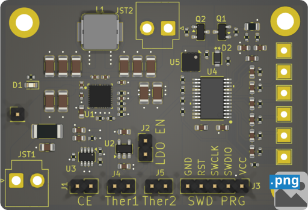
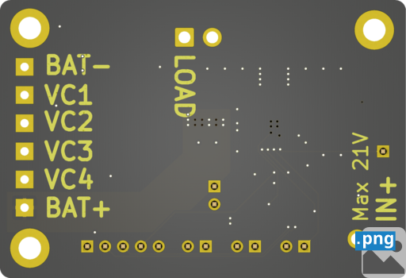
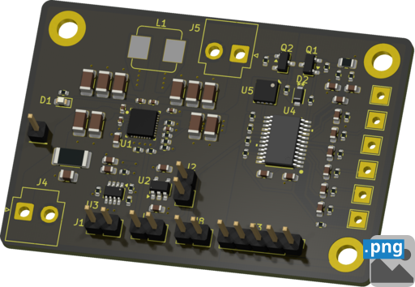
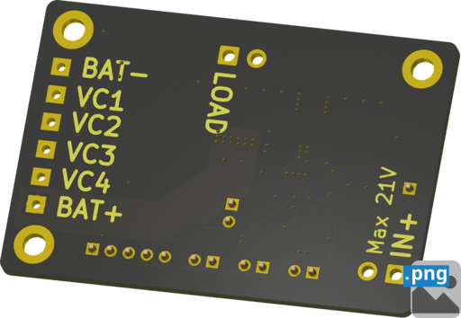

Top 3D viewer PCB render in PNG format

solar_smart_station-top.png
png_3d_viewer_top
Bottom 3D viewer PCB render in PNG format

solar_smart_station-bottom.png
png_3d_viewer_bottom
Top (angled) 3D viewer PCB render in PNG format

solar_smart_station-angled_top.png
png_3d_viewer_angled_top
Bottom (angled) 3D viewer PCB render in PNG format

solar_smart_station-angled_bottom.png
png_3d_viewer_angled_bottom